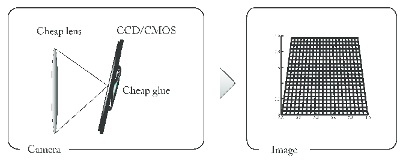
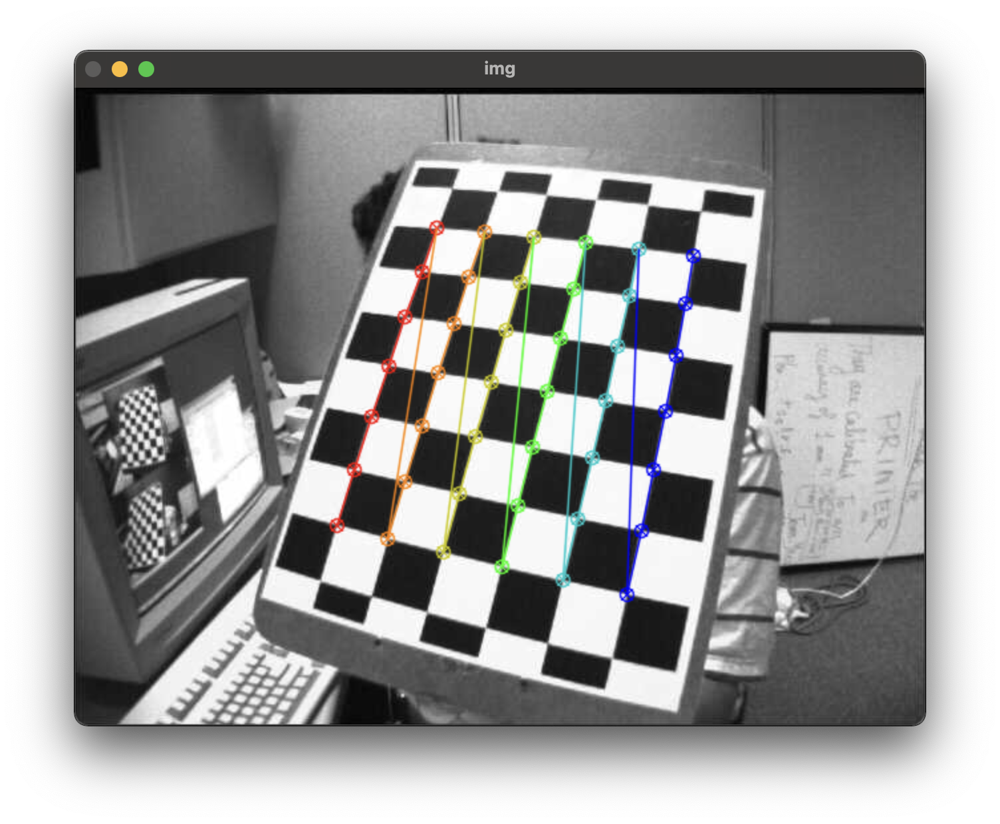
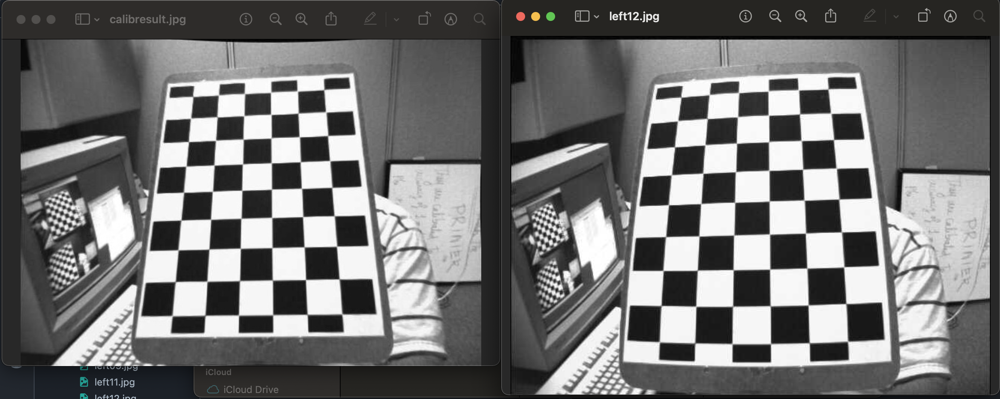

Camera Calibration의 필요성에 관하여
간단하면서 가장 기본적이고 필요한 내용 Camera Calibration

12월 첫 포스팅이자 마지막 포스팅이 될 듯하다. 최근에 .NET을 공부하느라 컴퓨터 비전에 굉장히 소홀이 했다. 뭐 솔직하게 말해서 .NET 공부 보다는 노느라 바뻐서 그랬다고 해도 무방하다.
Camera Calibration의 주 목적을 알게 되면 왜 필요한지 쉽게 이해가 된다. 가장 먼저 카메라로 인해 생기는 왜곡을 찾고 카메라에서 생기는 근본적인 오류, 왜곡이 되지 않은 사진에서의 각종 정보들을 읽어오냐가 중요하다. 일단 그 전에 카메라의 왜곡에 대해서 먼저 알고 넘어가야한다.
주로 카메라의 왜곡현상은 크게 2개로 나눌수 있는데 가장 radial distortion가 있다. 직역하면 방사형 왜곡인데 주로 Fish-eye Lens와 같은 사진에서 생기는 왜곡이다.

왼쪽 No distortion을 제외한 가운데와 오른쪽 왜곡 이미지가 가장 잘 묘사했다고 생각이 된다. radial distortion은 위 사진에서 나오는 왜곡현상을 모두 의미한다. 가장 흔히 접하는 카메라 렌즈의 왜곡 현상이다. 물론 고의적으로 영상에 담겨지는 느낌이나 화각을 넓히기 위한 주 목적도 있겠지만 아무튼 왜곡은 왜곡이다.
그리고 두번째 왜곡은 Tangential Distrotion이다. 이는 그리 흔치는 않지만 인스타그램이나 사진앱에서 각도 설정 등에서 볼 수 있는 기능 중에 하나이기도 하다. 명확히는 유사하다고 하는게 좋을 거 같다. 아까는 카메라의 렌즈에 대한 문제라고 하면 이번에는 카메라의 위치와 관점으로 생기는 문제라고 생각된다. 아래 사진을 보면 좀 이해가 쉬울 것이다.
왼쪽을 카메라의 내부라고 생각하고 보면 되는데 우리 말로 좀 풀이를 하면 다음과 같다. 품질이 좋지 않은 카메라 렌즈와 CCD/CMOS (빛 데이터를 디지털화 해주는 회로) 가 제대로 고정이 되어 있지 않아 사진이 위에서 쳐다보듯 사다리꼴 형태로 생기는 카메라 왜곡 현상을 말한다. 물론 사다리꼴 형태 외에도 다양한 형태의 문제가 발생하기 일 수 이다만, 어떤 형식으로 문제가 생기는지는 카메라의 형태가 성능 등 여러 면에서 다르다고 볼 수 있다.
아무튼 주 목적은 다양한 각도의 사진들에서 패턴을 분석하여 특정 이미지에 왜곡을 감소 시키는 것이다. 중요한 것은 어떤 객체를 중심으로 두고 어떤 패턴을 분석하냐가 큰 관건이다. OpenCV 에서는 함수명에서도 알 수 있듯이 ChessBoard (체스판 혹은 바둑판?) 을 중점으로 두고 하고 있다.
위와 같은 방식으로 패턴을 분석하게 된다. OpenCV 라이브러리 내에서는 총 14장의 각각 다양한 각도에서의 Chessboard 사진이 있다. 사실 Chessboard만 움직이는 사진이긴 하다만 다양한 각도이긴 하다. 무튼 14장의 사진을 분석을 한다.
분석된 이미지 내에서 ChessBoard를 기준으로 위치 및 방향, 기울어짐 등 사진의 다양한 요소들을 찾아낸다. 그리고 최종적인 결과물을 보면 다음과 같이 왜곡현상이 확연히 줄어들었음을 볼 수가 있다.
왼쪽이 분석 후 왜곡현상을 줄인 사진, 오른쪽이 원본
이렇게 분석을 통해 확연한 왜곡을 줄여주게 된다. 그렇다면 어떤 방식으로 되냐? Raidal이냐 Tangential 이냐에 따라 방식은 좀 달라진다. Radial은 다음과 같다.
`y_"distorted"= y(1+k_1r^2+k_2r^4+k_3r^6) `
그리고 Tangential은 다음과 갍다.
`y_"distorted"=y+[p_1(r^2+2x^2)+2p_2xy]`
여기서 5개의 인자값이 가장 중요한 역할을 지니고 있다. `Distortion Coefficients = (k_1, k_2, p_1, p_2, k_3)` 가 왜곡 계수(?) 와 같다. 외곡 계수라 함은 카메라가 찾아야할 일종의 특징점이다. 이해가 안된다면 Camera Calibration의 목표를 다시 한번 생각하면 쉬울 것이다. 왜곡보정이 주 목표인 Camera Calibration은 여러 사진의 패턴을 분석하기 위해서는 각 사진에 특징점을 찾아 이를 분석하고 왜곡 보정을 진행해야 할 것이다. 여기서 특징 점을 분석을 하기 위한 일종의 그릇 같다. 그리고 그에 들어가는 재료나 음식들은 각 사진들의 차이점 혹은 패턴이 될 것이다.
수학적인 부분에 대해서 좀 더 얘기를 해보자. 모든 이미지는 행렬로 이루워져 있다. 실제로 OpenCV 에서 cv2.imread 함수를 통해 읽어진 사진을 Text로 출력을 하면 행렬과 같은 방식으로 출력이 된다. 그렇기에 왜곡된 이미지 또한 행렬로 처리가 되는데 이때 일반적인 내부 파라미터의 영향이 제거된 렌즈 왜곡은 Normalized Image Plane 이라고 한다. 한국어로 직역을 해도 어느정도 감은 잡힐 것이다. 이를 다시 수학식으로 표현 하면 다음과 같다.
여러번 다른 글에서 강조를 했지만 사진은 어디 까지나 2차원이다. 3차원인 물체를 찍으면 `x, y` 축이 있는 2차원이다. 그렇기에 렌즈 왜곡이 일어나진 이미지를 3차원으로 표현을 해주면 위와 같은 식을 만들 수 있다.
그렇다면 왜곡이 일어난 이미지는 어떻게 수학적 모델로 표현이 되는가? 다음과 같다.